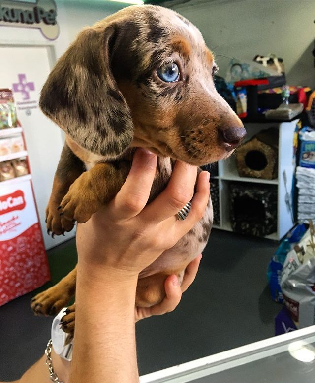

La clínica
Hakuna Pet se presenta como una clínica veterinaria de Monte Castro, con atención en consultorio y a domicilio con cita previa. Priorizan una atención cordial, respetuosa y seria, y el cuidado de la salud de pequeños animales.
Av. Álvarez Jonte 5251 · Monte Castro
Hakuna Pet atiende la salud de pequeños animales, con farmacia, alimento, accesorios y peluquería canina. También ofrecen retiro y cremación las 24 horas.

Hakuna Pet se presenta como una clínica veterinaria de Monte Castro, con atención en consultorio y a domicilio con cita previa. Priorizan una atención cordial, respetuosa y seria, y el cuidado de la salud de pequeños animales.
Los servicios que publican en su sitio, con la información de contacto que corresponde a cada uno.
Atención clínica de pequeños animales en el consultorio.
Visitas a domicilio, con cita previa.
Farmacia y productos para el cuidado de las mascotas.
Alimento balanceado, accesorios e indumentaria.
Baño de espuma, cortes higiénicos, de raza y de exposición.
Retiro de mascotas fallecidas, con opción a cremación, las 24 horas. Teléfonos: 15 5839-3094 y 15 4989-5409.
Según su sitio: lunes a sábado, de 9:00 a 13:00 y de 16:00 a 20:30. El servicio de cremación se ofrece las 24 horas.
Av. Álvarez Jonte 5251, Monte Castro, Ciudad de Buenos Aires.
Mail: hakunapet@gmail.com
Tel: 4566-5114 / 11 2888-3658
Escribinos por WhatsApp al 11 2888-3658, llamá al 4566-5114 o mandá un mail a hakunapet@gmail.com.